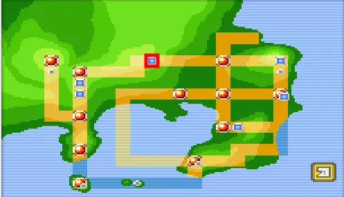

A região de Kanto é o cenário principal dos primeiros jogos da franquia Pokémon, como Pokémon Red, Blue, Green e Yellow, e permanece um dos ambientes mais icônicos e influentes da série. No jogo, Kanto é apresentada como uma região diversificada, repleta de cidades, vilas, rotas e locais secretos, oferecendo aos jogadores uma experiência completa de exploração, aventura e desafio estratégico. O jogador começa sua jornada em Pallet Town, uma pequena cidade pacata onde o Professor Oak apresenta o conceito de Pokémon e oferece a escolha do primeiro Pokémon inicial — geralmente Bulbasaur, Charmander ou Squirtle. Essa escolha inicial define não apenas o início da equipe, mas também influencia a estratégia do jogador para enfrentar ginásios e rivais ao longo da jornada. Pallet Town serve como ponto de partida e referência emocional, sendo o lar que os jogadores sempre retornam entre suas aventuras. À medida que o jogador explora Kanto, ele encontra uma variedade de cidades e vilas, cada uma com seu próprio ginásio, liderado por um líder especializado em determinado tipo de Pokémon. Por exemplo, Pewter City abriga o ginásio de Brock, especializado em Pokémon do tipo Pedra, enquanto Cerulean City é o lar da líder Misty, mestre em Pokémon do tipo Água. Cada cidade é conectada por rotas cheias de Pokémon selvagens e treinadores rivais, oferecendo desafios constantes e incentivando a evolução e diversificação da equipe do jogador. O jogo também apresenta áreas especiais, como a Viridian Forest, um labirinto de árvores densas e Pokémon do tipo inseto, e a Cerulean Cave, onde Pokémon raros e poderosos podem ser encontrados. Além disso, o jogador enfrenta a ameaça constante da Team Rocket, uma organização criminosa que tenta explorar Pokémon para fins pessoais. As batalhas contra a equipe vilã adicionam uma camada narrativa e estratégica, tornando a experiência mais dinâmica e envolvente.
